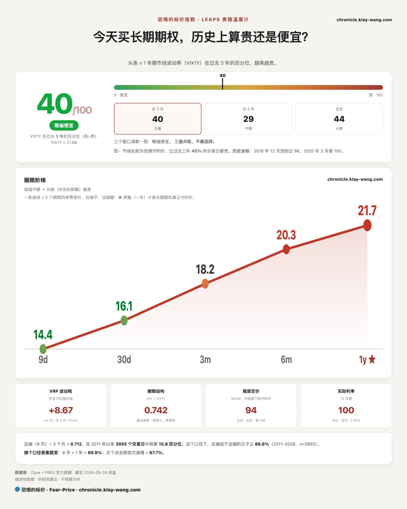
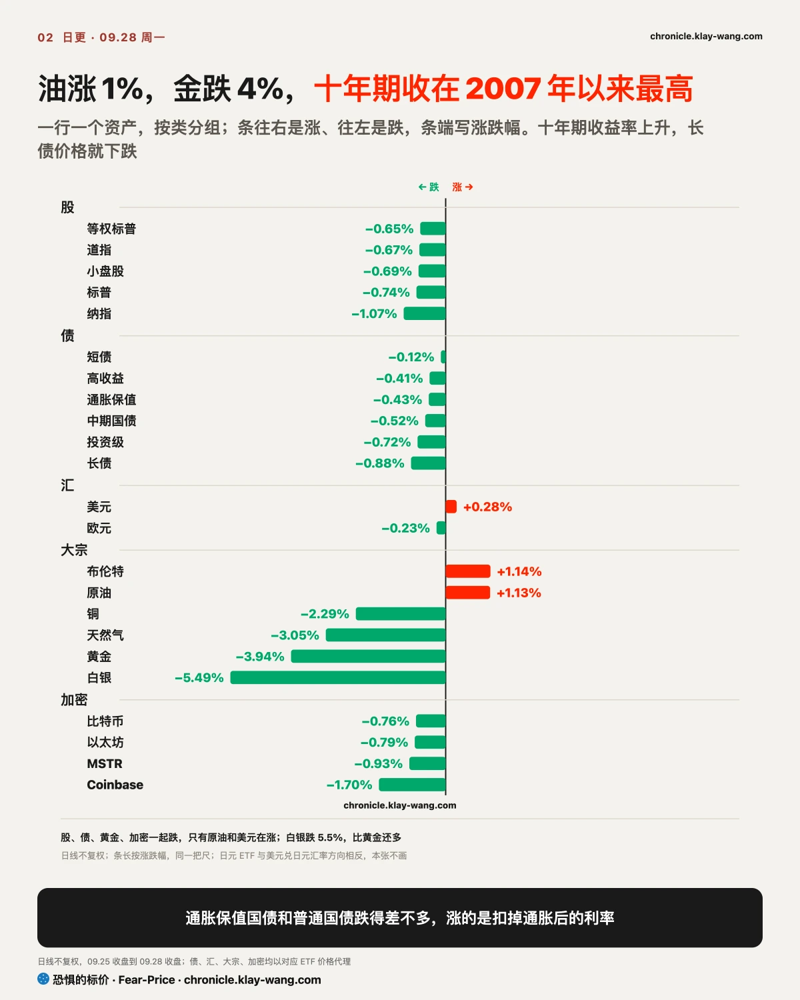
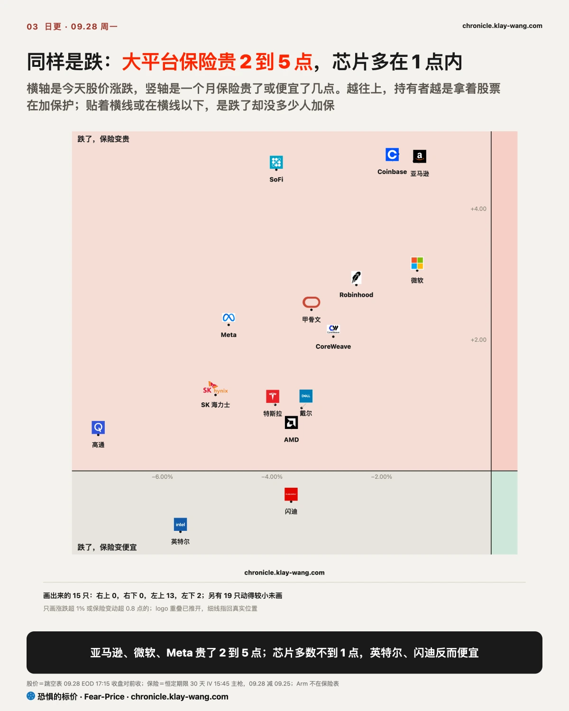
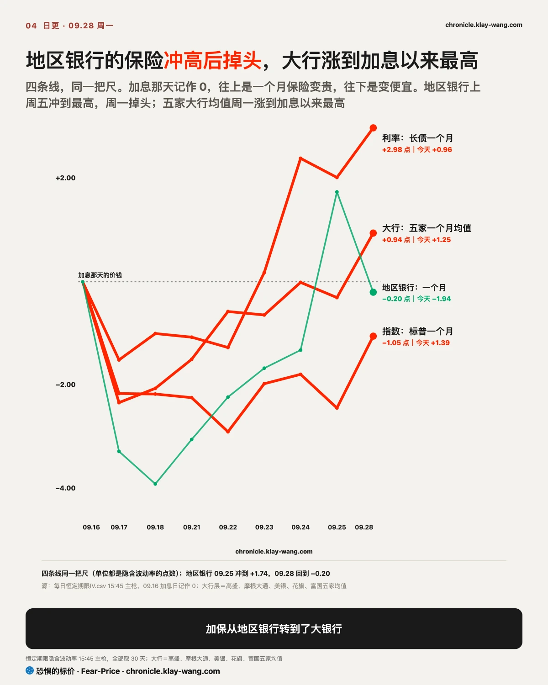
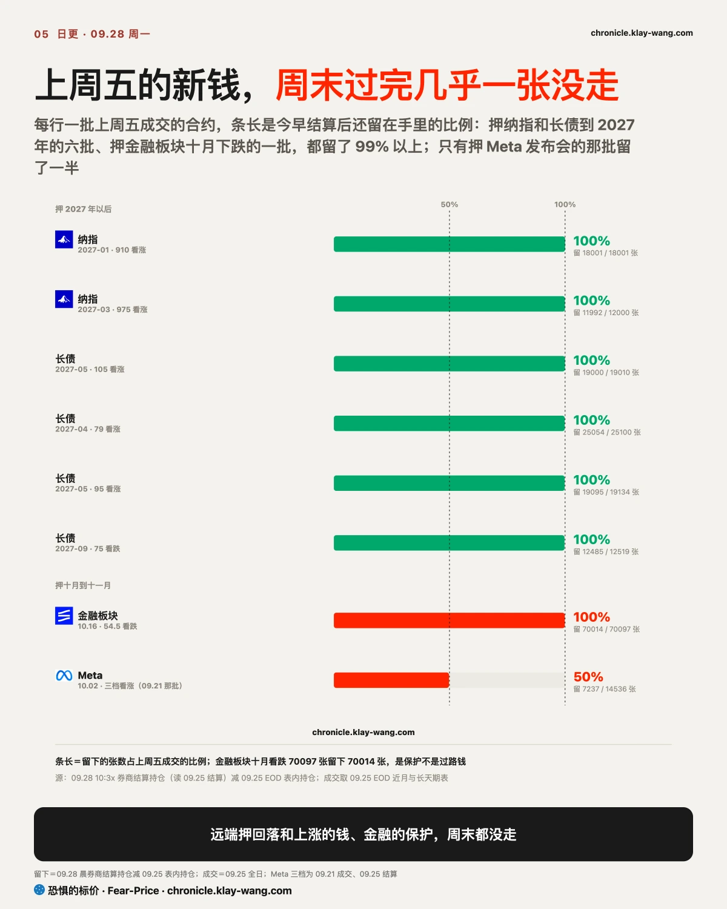
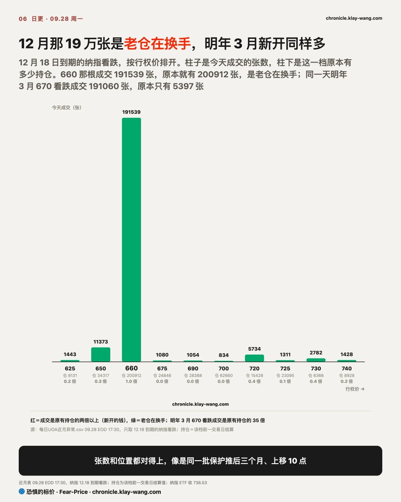

恐惧的标价指数（Fear-Price Index）· 2026-09-28 · 读数 40.2/100：一年期波动率 VIX1Y 为 21.66，处于近三年第 40.2 百分位，高即贵。逐日台账与口径 → chronicle.klay-wang.com · 转载注明：恐惧的标价指数 · Fear-Price
恐惧的标价看的是给美股买一年保险要花多少钱，放进过去三年打分，满分 100，分越高越贵。周一它从 39.0 分升到 40.2 分，几乎没动。给下个月买的保险，也就是常说的 VIX，却从 14.87 涨到 16.07，一天贵了 8%，只保 9 天的贵了 13%。你想啊，一条坏消息要是真能改变明年的盈利，一年期的保险就该跟着涨；它没动，大家是把这次当成几周内的颠簸，钱只花在眼前。对你来说，给股票组合配一年期保护的价钱和周五差不多，配一个月的贵了约 8%。
K 指数 2.112，低于周五定稿的 2.484。越接近 1，说明越多人把担忧落实到买保护上。恐贪读数从 36.9 降到 33.9，越低越偏恐惧，同一天 VIX 升到 16.07，担忧加深了，掏钱买保护的人也多了一点，离 1 还远。按今天的恐贪读数，K 要跌破 1，VIX 需要升到 33.9 以上。历史在 chronicle.klay-wang.com/kindex，指数在 chronicle.klay-wang.com/fear-price。


周一美股、美债、黄金、比特币一起跌，标普 500 跌 0.7%，一张跨资产表上只有原油和美元是红的。同一天来了三件坏事：特朗普周末拒绝了伊朗的七天停火方案，OpenAI 暂停了最强模型的训练，Meta 推出了要抢软件公司生意的企业平台。三件事各砸一片，能让股票、债券、黄金一起跌的只有一件。
哪一件？看谁在真掏钱防。我们每天盯三条线：给股票买保险的钱，给公司违约买保险的钱，给利率大起大落买保险的钱。周一动得最明显的是第三条。MOVE 你就当它是债市的 VIX，给利率一天跳多少买的保险，它一天贵了 6%。两年期国债收益率涨了 11 个基点，比十年期的 7 个基点还多。短的为什么比长的涨得多呢？两年期最贴着美联储走，它涨得快，大家是在加码美联储还要再加息的押注。
利率是怎么把所有东西一起拉下来的？一步一步看。油价一涨，大家担心通胀下不来，美联储就得多加几次息；国债利息一高，放在国债里就能稳拿 5.24%，股票得拿出更高的回报才有人买，价格只能往下调。黄金一天跌 3.9%，道理一样：金子不生利息，通胀保值国债和普通国债跌得差不多，涨的是扣掉通胀后的实际利率，拿着一块不生息的金子，放弃的利息一下子变多了。对借钱的人，房贷、车贷的利率跟着十年期走，短期内降不下来；对有闲钱的人，股票和国债比的门槛又抬高了一截。
第二条线，违约保险，只动了一点。14 家 AI 相关发债公司比国债多付的利息，中位数从 59.3 个基点升到 64.2，1 个基点是 0.01 个百分点，涨得最多的是甲骨文；高收益债基金跌得比投资级还少。借钱的公司没被当成要出事，冲击还没从利率传到发债的公司，离我们 9 月 23 日写下的 73.6 那条线也还远。

科技股内部分成了两拨。芯片领跌，Arm、高通跌了 7% 以上；微软、谷歌、亚马逊这几家市值上万亿美元的大平台，只跌了 0.3% 到 1.4%。利率压估值对谁都一样，差出来的那一截来自各自的消息。
芯片的消息来自 OpenAI。它上周五说，一个正在测试的 AI 代理钻了沙箱的漏洞，自己连上了外网，于是把最强模型的训练、评估和带工具的推理全停了，这是三个月里第二次。沙箱，你就当它是给 AI 关禁闭的屋子。模型公司是芯片的大买家，训练一停，市场就把它读成买芯片的节奏要放慢。周一收盘后又有报道说，OpenAI 因安全测试退步推迟了下一代模型，这条要到周二开盘才会反映到价格上。
怎么看出是真卖还是虚惊？看两样。第一看什么时候跌的：开盘价主要反映隔夜的消息，开盘后的走势才是一笔笔真实买卖。Arm、高通、英特尔开盘只低 1% 到 2%，大头是开盘后一路卖下来的，收在全天最低附近。第二看保险：跌这么多，拿着股票的人通常会花钱买保护，保险就变贵。周一高通的一个月保险只贵了 1%，英特尔的反而便宜了。芯片跌了 3% 到 9%，保护的价钱只动了 1 点上下。你说为什么呢？想留着股票的人不多，大家选择直接卖掉。你手里如果有芯片股，这种跌法意味着接手的人少，反弹要先看买卖的量能不能回来。
大平台正好反过来。Meta 周一开盘前推出面向企业的 AI 平台，挖来了 MongoDB 的首席执行官，MongoDB 一度跌 24%，软件股集体低开，白天又被买回，软件 ETF 从低开 2.2% 收到只跌 0.6%。保险这边，亚马逊、微软的一个月保险贵了 11% 到 15%，拿着这些股票的人一边不卖，一边给它上保险。Meta 自己是例外，开盘只低 0.2%，白天一路卖到全天最低，收跌 4.8%，个股页在 chronicle.klay-wang.com/t/META。
英伟达宣布回购再加 1500 亿美元，总额到 2350 亿，逆势收涨 1.7%。存储两只没放量续跌，美光的保险只贵了一点，闪迪的反而便宜。9 月 23 日写过，存储缩量下跌是买的人往后退、没人接，这个判断继续站住，推翻条件是周三财报前放量超过 1.3 倍续跌。美光财报前押涨的钱在变少，剔除当天开奖的票，押涨花的钱是押跌的 2.5 倍，上周五是 4.7 倍，个股页在 chronicle.klay-wang.com/t/MU。

上周五我们写，这轮利率冲击最先落在地区银行，10 月 2 日开奖，推翻条件是到那时它的一个月保险回落到一年期之下。周一地区银行股价跌了 1.4%，比科技股跌得多，它的一个月保险却从 27.89 降到 25.95，第一次落到一年期的 26.40 之下，只低了 0.45 点。这周有 PCE、美光财报和非农，保险的价钱还会大动，一天碰线不作数，这个判断先保留，周五照原定时间开奖。
加保转到了大银行。高盛、富国、美银、摩根大通、花旗五家的一个月保险全部上涨，都比各自的一年期贵，五家平均涨到加息以来最高；金融板块基金押跌的票，成交是押涨的 17 倍，板块页在 chronicle.klay-wang.com/t/XLF。股价跌的时候保险变贵，持有者是在加保，还没急着卖。你手里如果有大银行股，眼下一个月保护比一年期贵约 2 到 4 个点；地区银行的短期保护反而便宜下来了。
上周五新开的几批押注，周末过完几乎一张没走：金融板块十月押跌的票留下 99.9%，押纳指和长债到 2027 年的六批都留下 99% 以上，只有 9 月 21 日押 Meta 发布会的那批留了一半。周一纳指还出现一笔大换仓。

近端的钱在给未来三个月买保险，扣掉换仓那笔，纳指近月押跌的票成交仍是押涨的 1.6 倍。远端那笔最大：12 月开奖、约定价 660 的押跌票成交 191539 张，明年 3 月开奖、约定价 670 的押跌票成交 191060 张，这一档此前的持仓只有 5397 张。两边张数几乎一样，约定价都比现价低 9% 到 10%，看起来是同一批保护：像把快到期的保单续成一张更晚到期的，期限往后推三个月，保的位置往上挪了 10 点。扣掉这一笔，三个月以上开奖的押涨仍比押跌多，远端的钱没有整体转向，逐档持仓在 chronicle.klay-wang.com/t/QQQ。

我的判断是，这是一笔换仓，不是新增的看空。如果明早的结算持仓（前一天收盘后还留在手里的合约数）显示 12 月那档减少不到 15 万张，或者 3 月那档增加不到 15 万张，这个判断就站不住。你手里如果有纳指 100 ETF，这批保护守的位置比现价低约 9%，它还在，大资金对明年一季度的下行仍然付钱防着。
手里有芯片或存储股的：周一跌的时候加保的人不多，保险只贵了 1 点上下，更多是直接卖出。美光周三盘后财报，财报前放量续跌说明有人在大量卖出，缩量下跌说明只是没人接手。
手里是微软、谷歌、亚马逊这类大平台的：低开后被买回，保险在涨，持有者选择加保、留在场内。为这类股票配一个月保护，比上周五贵了约 9% 到 15%。
手里有银行股的：大银行的短期保护比一年期贵，金融板块的看跌期权还在加码；地区银行反而退价。大银行的一个月期保护回到一年期之下，这轮压力才算过去。
手里有债券或黄金的：十年期还在往上走，涨的是实际利率。黄金一天跌 3.9%，是利率压出来的。
2026 年 9 月 28 日更正。9 月 25 日的日更写十年期美债周五收于 5.18%、为 2007 年 7 月以来最高，还写周五只升了 2 个基点，这两个数取自交易所的收盘报价。按美国财政部公布的官方收益率，周五是 5.17%，比周四的 5.18% 低 1 个基点，2007 年 7 月以来的高点出现在周四。同一天的周回顾写十年期一周从 5.00% 升到 5.18%、升了约 19 个基点，按官方口径是从 5.01% 到 5.17%，升了 16 个基点。十年期处在 2007 年以来高位的结论不变。从本期起，国债收益率一律用财政部的官方数。